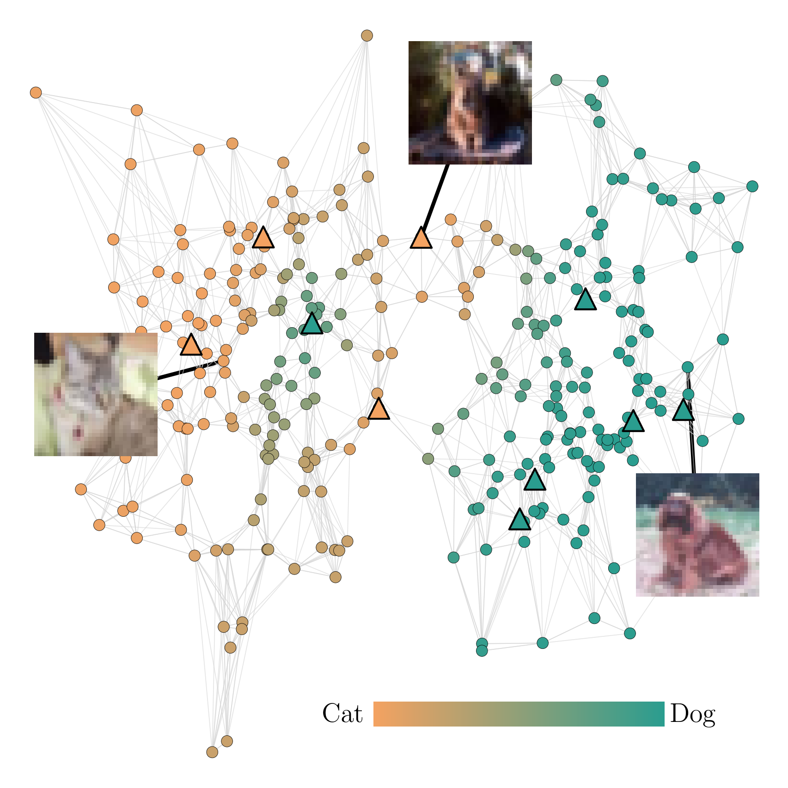
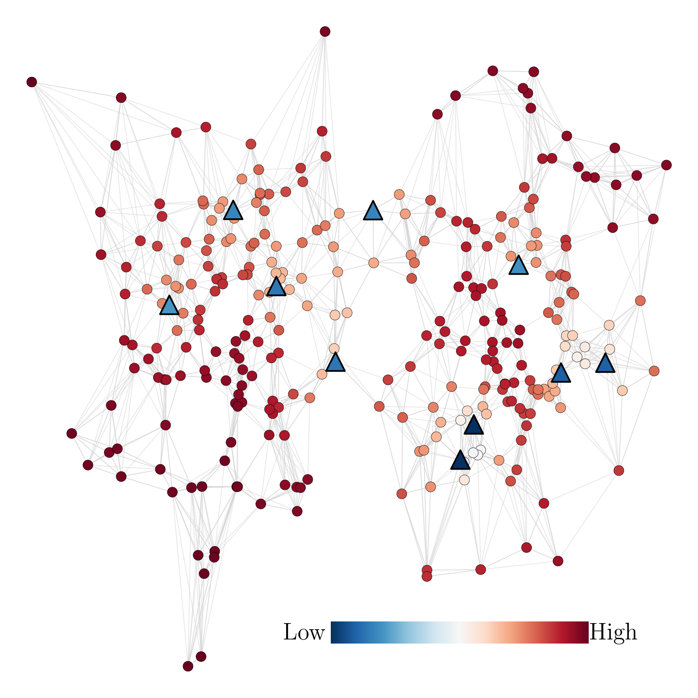
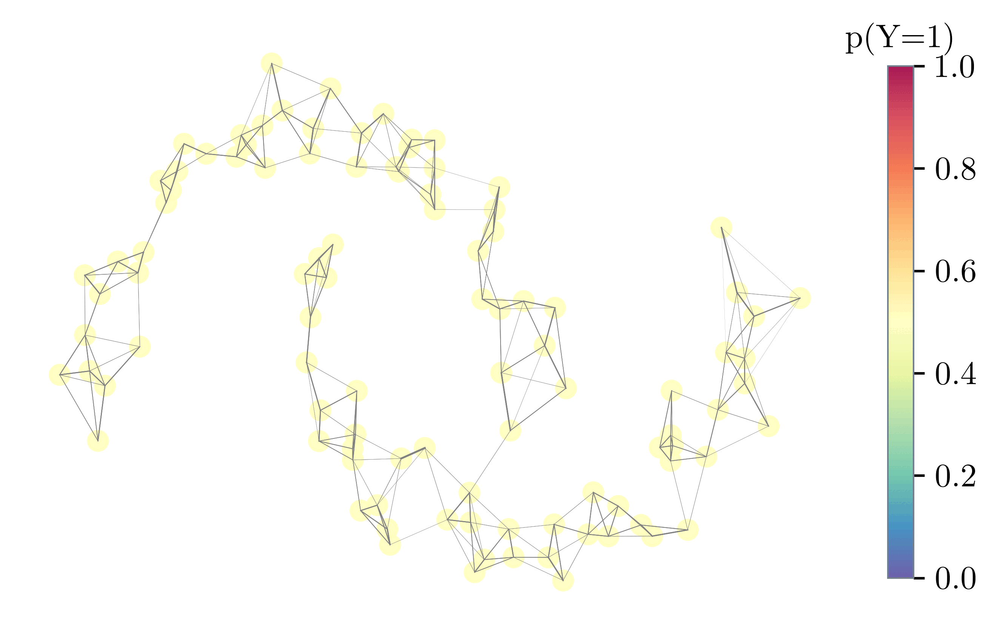

Probabilistic Label Spreading: Efficient and Consistent Estimation of Soft Labels with Epistemic Uncertainty on Graphs
Jonathan Klees1 • Tobias Riedlinger2 • Peter Stehr3 • Bennet Böddecker3 • Daniel Kondermann4 • Matthias Rottmann1
1 Institute of Computer Science, University of Osnabrück, Osnabrück, Germany
2 Department of Mathematics, Technical University of Berlin, Berlin, Germany
3 Department of Mathematics, University of Wuppertal, Wuppertal, Germany
4 Quality Match GmbH, Heidelberg, Germany



Probabilistic label spreading estimates soft labels based
on few noisy annotations through graph-based propagation (left).
It also estimates epistemic uncertainty of soft labels (right).
Abstract
This work tackles a central challenge in data-centric AI: How to obtain reliable, informative labels for large datasets when high-quality human annotations are scarce and noisy.
The key idea is to move beyond single “hard” labels and instead estimate soft labels, probability distributions over classes, together with epistemic uncertainty, which reflects how confident we are in those estimates. Our proposed method propagates sparse and noisy human annotations across a similarity graph using a probabilistic extension of the label spreading algorithm. By exploiting similarity structure in the feature space, it can infer high-quality soft labels even when the number of annotations per data point is small.
Beyond empirical gains, the approach comes with strong theoretical guarantees. We show that probabilistic label spreading yields consistent estimates under mild smoothness assumptions, and we derive PAC-style bounds on the required dataset size and annotation budget. Extensive experiments on standard image benchmarks demonstrate substantial reductions in labeling effort and state-of-the-art performance on a data-centric image classification benchmark. Overall, the work offers a principled and scalable step toward uncertainty-aware, semi-automated dataset labeling.
Method Overview
We build on the label spreading algorithm (Zhou et al. 2003) and adapt it such that it supports soft labels and is tailored to the use case of semi-automated labeling in a crowdsourcing setting. The main modification is that label spreading is performed iteratively, each time with only a single seed $x_i$ that has been assigned a feedback $c$ sampled from its soft label $p_i$. In order to ensure efficiency and scalability to large datasets, we use a sparse k nearest neighbor (k-NN) graph as well as efficient solvers to approximate the heat kernel $(I − αS)^{−1}$. The estimate is refined incrementally with each new annotation as illustrated below.

Performance Comparison with Baselines
On the Cifar-10-H dataset that contains crowdsourced annotations, we compare the performance trajectories of our method with the ones of the baseline algorithms. k Nearest Neighbor regression is outperformed by Gaussian Kernel regression and the PLS algorithm, particularly in the regime of few feedbacks. While the Gaussian Kernel can compare to PLS algorithm, performance gains of our method are more pronounced on datasets such as Two Moons, where density-based clustering is beneficial. All methods surpass CLIP zero shot performance at a certain annotation budget. As can be seen in the right plot, the choice of the hyperparameter $\alpha$ steers the stiffness of the estimated function which navigates the trade-off between label efficiency and estimation accuracy.
.png)
.png)
Performance on DCIC Benchmark (Schmarje et al. 2022)
In this benchmark, the task is to label 10 probabilistic datasets based on provided noisy annotations such that an image classifier trained on those labels generalizes to unseen data. Since labels are probabilistic, performance is measured using the KL divergence. For comparison, the mean and median performance differences relative to a fully supervised baseline are reported across datasets. As shown in table III, our method outperforms the state of the art in this benchmark. It is best on low annotation budgets as well as on large budgets where each image is annotated at least once. This reflects the flexibility of our approach, enabled by the choice of the spreading intensity $\alpha$, which can be reduced for larger annotation budgets.
| Method | 10% Budget | 100% Budget | 1000% Budget | |||
|---|---|---|---|---|---|---|
| Median | Mean (SEM) | Median | Mean (SEM) | Median | Mean (SEM) | |
| ELR+ | -0.16 | -0.59 (0.22) | -0.13 | -0.17 (0.06) | 0.15 | 0.24 (0.06) |
| PLS (ours) | -0.42 | -0.82 (0.19) | -0.17 | -0.33 (0.08) | -0.02 | -0.03 (0.01) |
Consistency Results
To achieve consistency, we increase the spreading intensity
α to reduce variance while also reducing the bandwidth of
the underlying ε-graph to control bias. We configure the rates
such that both variance and bias can be controlled, i.e., $\alpha \to 1$
sufficiently slow such that shrinking neighborhoods still fill up
with data points. Bias is controlled via a path length argument
for which we exploit the neighborhood structure and the fact
that weights are multiplied with α on each edge so that the
influence from nodes via long paths is small. We derived the following theorem:
Theorem (Consistency of Label Spreading Estimates under Sublinear Annotation Growth)
Let $\varepsilon > 0$ and $\delta \in (0, 1)$. Under the above assumptions, when choosing the spreading intensity as $\alpha_n = 1 - n^{-\frac{1}{d+1}} \to 1$ dependent on the dataset size, the bandwidth of the epsilon-graph as $h_n = \varepsilon / (3 L_y \lceil\log_{\alpha_n} (\varepsilon / 12\sqrt{2}) \rceil) \to 0$, and providing an annotation budget of at least $m_n = O(n^{1 - \frac{1}{2(d+1)}} \log n)$, for $n$ sufficiently large, the PLS algorithm returns estimated soft labels $\hat{p}_1, \dots, \hat{p}_n$ such that $P(\exists q \in \{1, \dots, n\} : \|\hat{p}_q - p_q\|_2 > \varepsilon) \leq \delta$. More precisely, depending on $\varepsilon$ and $\delta$, the following sample complexity bound holds for $n$: \[ P(\exists q \in \{1, \dots, n\} : \|\hat{p}_q - p_q\|_2 > \varepsilon) \leq 12 n C \exp\left( - \zeta \frac{m_n}{n^{1-\frac{1}{2(d+1)}}}\right) \] with some constant $\zeta$ depending on $\varepsilon$, the minimal and maximal density $p_{\min}, p_{\max}$, the feature space $\mathcal{X}$ and its dimension $d$, the number of classes $C$, and the Lipschitz constant $L_y$. ⠀
Resources & Links
Acknowledgments
J.K. and M.R. acknowledge support by the BMFTR within
the project “RELiABEL” (grant no. 16IS24019B). D.K. also
acknowledges support within the project “RELiABEL” (grant
no. 16IS24019A).
P.S. and M.R. acknowledge support by
the state of North Rhine-Westphalia and the European Union
within the EFRE/JTF project “Just scan it 3D” (grant no.
EFRE20800529).
Citation
@misc{klees2026probabilisticlabelspreadingefficient,
title={Probabilistic Label Spreading: Efficient and Consistent Estimation of Soft Labels with Epistemic Uncertainty on Graphs},
author={Jonathan Klees and Tobias Riedlinger and Peter Stehr and Bennet Böddecker and Daniel Kondermann and Matthias Rottmann},
year={2026},
eprint={2602.04574},
archivePrefix={arXiv},
primaryClass={cs.LG},
url={https://arxiv.org/abs/2602.04574},
}
Contact
Have questions or want to collaborate? Reach out: